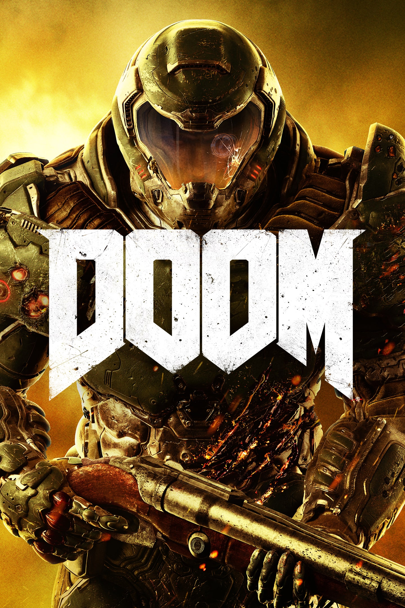

Search login register User Admin About Us Doom  About The Game Albion Online is a sandbox MMORPG (Massively Multiplayer Online Role-Playing Game) developed by Sandbox Interactive. Launched in July 2017, it has gained popularity for its player-driven economy, open-world PvP (Player versus Player) battles, and a unique, classless character progression system. Here's an overview of Albion Online: Player-Driven Economy: One of Albion Online's defining features is its player-driven economy. The in-game world revolves around a resource-based economy, where players gather, craft, and trade items, weapons, and armor. Every item in the game is crafted by players, creating a dynamic market where supply and demand determine prices. This system encourages player cooperation and specialization in various crafting and gathering professions. Classless Character Progression: Albion Online breaks away from traditional MMO character classes. Instead, it uses a unique system based on equipment and skill choices. Players can mix and match gear and abilities to create their playstyle. This flexible approach allows for diverse character builds and encourages experimentation. Full Loot PvP: The game features a high-risk, high-reward open-world PvP system. Players can engage in battles and skirmishes anywhere in the game world, and when defeated, they drop their equipment and inventory items. This adds a level of tension and excitement to the game, making every encounter meaningful. However, players can mitigate risks by playing in safer zones or forming alliances with other players. Territory Conquest: Albion Online centers around territorial control. Guilds and alliances can claim and defend territories, which grant them access to valuable resources and revenue from taxes. Large-scale battles, known as GvGs (Guild vs. Guild), determine ownership of these territories. This territorial warfare aspect drives players to collaborate, strategize, and engage in epic battles. Cross-Platform Play: Albion Online supports cross-platform play across Windows, macOS, Linux, iOS, and Android. This accessibility allows players to connect with a broad player base and enjoy the game on their preferred device. Regular Updates: The developers of Albion Online are committed to improving and expanding the game. They release regular updates, including new content, balance changes, and quality-of-life improvements. These updates keep the player experience fresh and engaging. Player-Run Economy: In addition to crafting and trading, Albion Online also allows players to own and manage their shops and markets. This player-run economy adds another layer of depth to the game and encourages entrepreneurial gameplay. Community and Guilds: Building strong social connections is essential in Albion Online. Joining guilds or alliances is almost a necessity, as they offer protection, resources, and access to larger-scale content. The game fosters a sense of community and camaraderie among its players. No Pay-to-Win: Albion Online prides itself on its fair business model. While it offers a premium subscription option (known as "Premium Status"), it does not sell pay-to-win items that would unbalance the game. Premium Status provides convenience and cosmetic benefits, but all gameplay-affecting content is accessible to free players. Albion Online's unique gameplay mechanics and its focus on player-driven content have garnered a dedicated fan base. It offers a refreshing take on the MMORPG genre, encouraging player agency and cooperation in a sandbox world filled with opportunities for adventure, conflict, and economic success. What did you think of this game? 0 0